Tout est fait maison, chaque jour.
Pâtes fraîches, tartares coupés au couteau, poissons du jour, desserts signés. Une cuisine française & italienne travaillée sur place — du plat du jour à 13,90 € au dernier dressage du soir.
De 8 h à 2 h, sans fermer.
Dix-huit heures d’affilée, sept jours sur sept : le café du matin et le dernier cocktail sont servis au même comptoir. Le repère rose indique où en est la maison à l’instant où vous lisez.
Faites glisser le ruban →

Le geste, minute.
Coupé, dressé et envoyé à la commande. Coupé, dressé et envoyé à la commande, dans notre cuisine.
Le plat du jour est à 13,90 €.

Jusqu'au dernier verre.
Bar à cocktails, ambiance des Grands Boulevards, ouvert tard — 7j/7 jusqu'à 2h.

Sous l'arbre en fleurs.
La terrasse la plus fleurie du boulevard, des salles chaleureuses — du café du matin au dernier cocktail.
Cuisine française et italienne
Ce qui sort
de la cuisine.
Huit secondes, sans commentaire. Le film complet plus bas.

Louisette,
en 622 vues.
66 assiettes, la façade, les salles, la terrasse, les desserts et les verres. Touchez une photo pour l'agrandir.
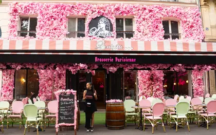
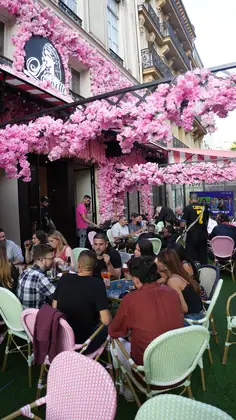
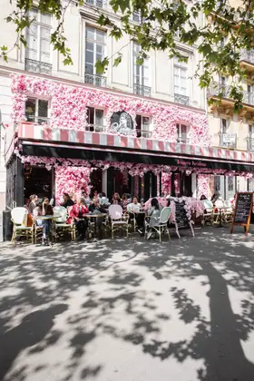
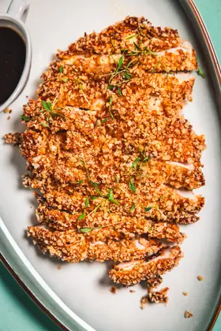
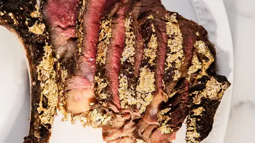
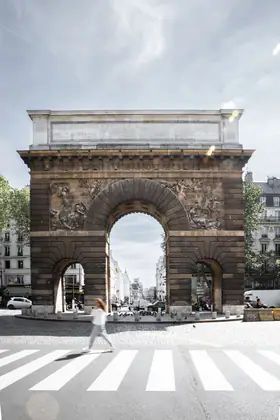
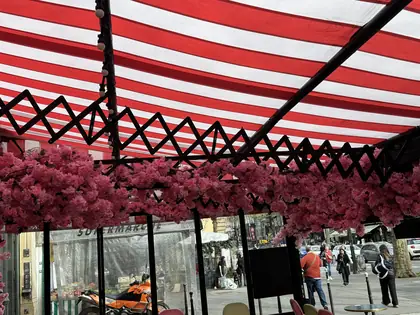
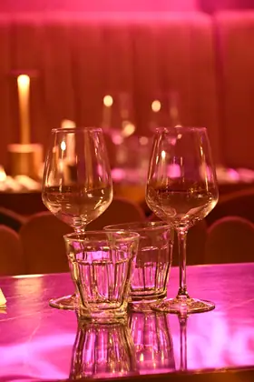
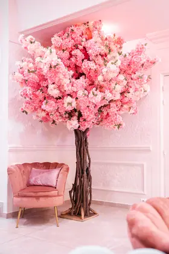
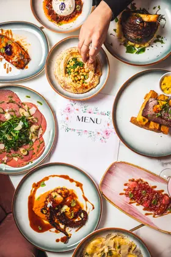
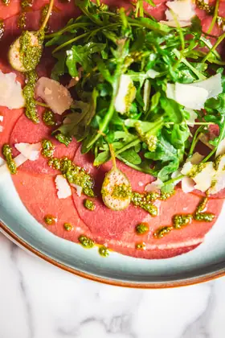
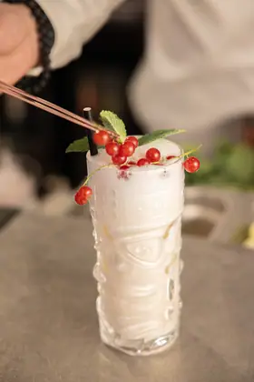
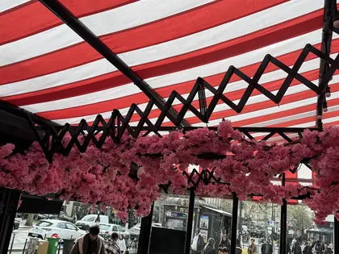
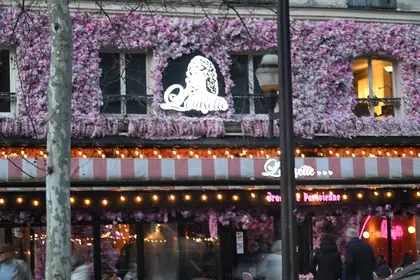
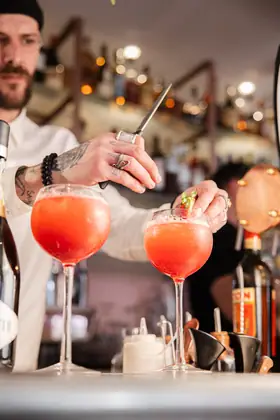
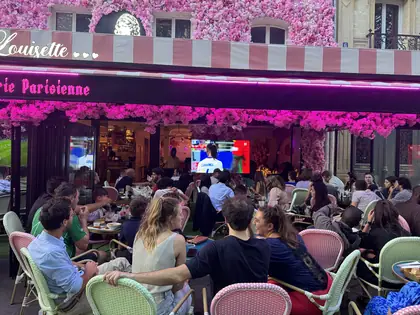
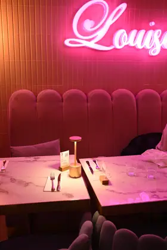
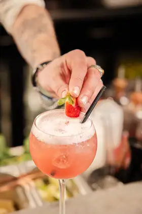
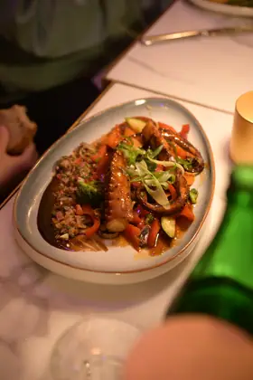
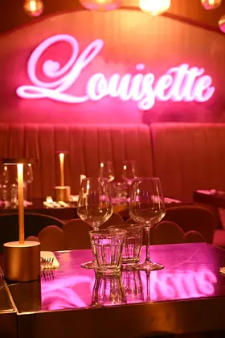
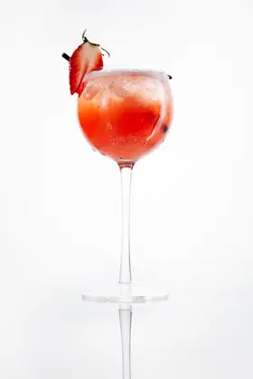
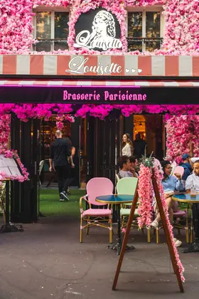
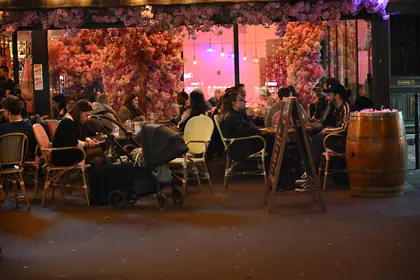
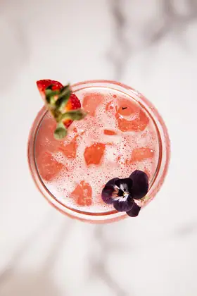
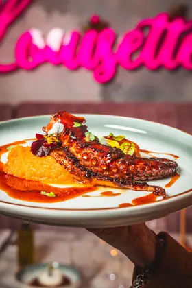
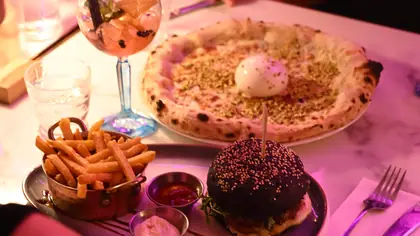
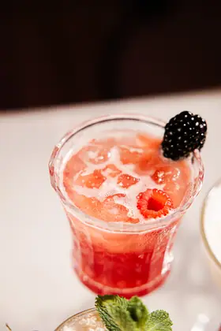
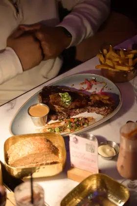
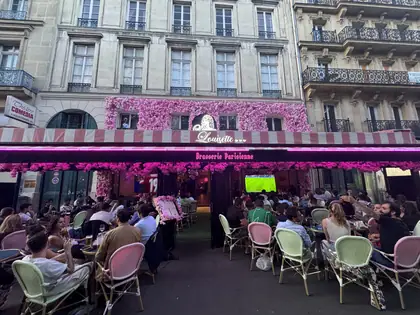
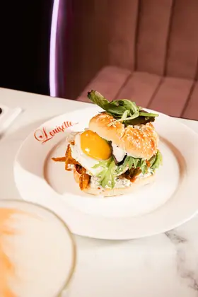
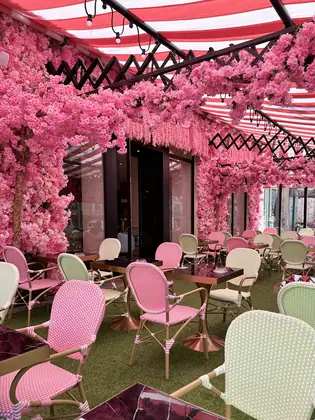
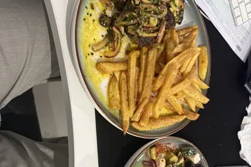
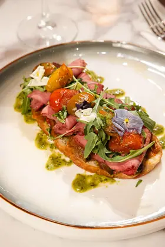
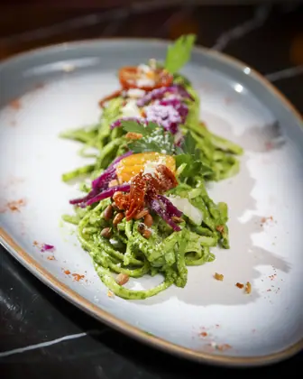
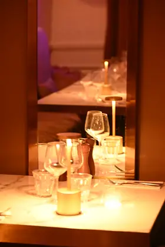
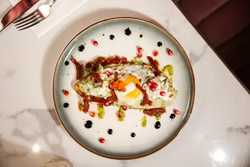
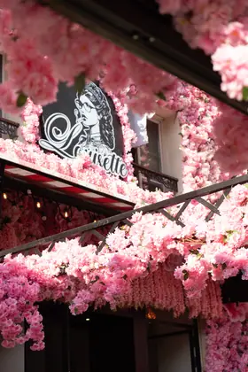
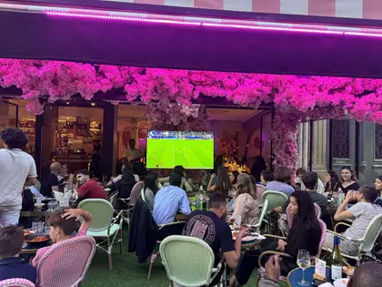
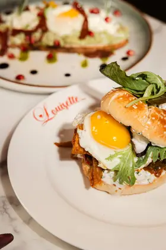
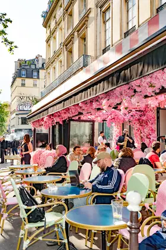
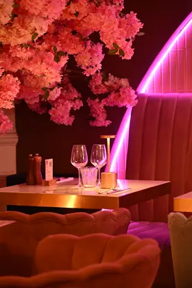
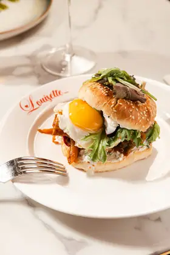
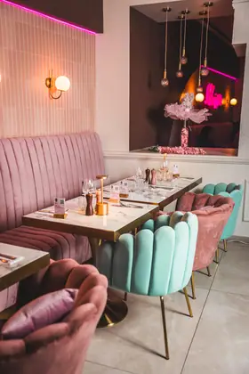
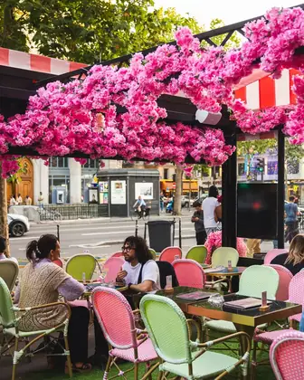
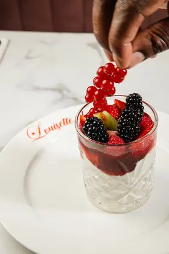
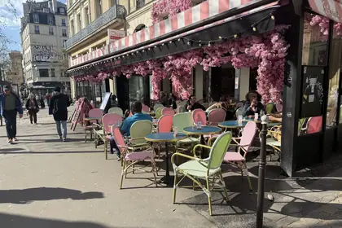
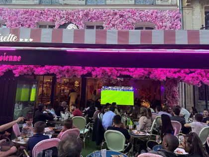
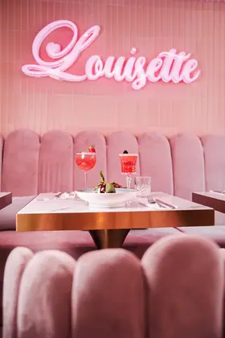
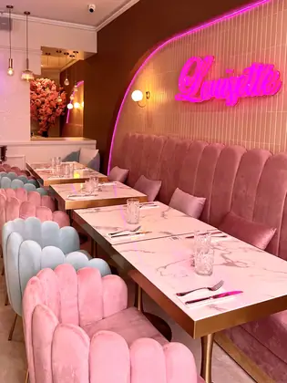
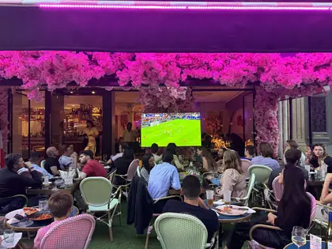
Groupes et privatisation
Jusqu'à 250 assis
/ 400 cocktail.
Anniversaire, entreprise, EVJF, dîner de théâtre. Dites-nous la date et le nombre — on revient avec un devis.
Découvrez la Maison
en un film.
31 secondes : la façade en fleurs, la salle au néon, l'assiette.
4,6/5
8 517 avis cumulés au 7 septembre 2026
Google 7 312 · Tripadvisor 1 022, Travellers’ Choice · Petit Futé 133 · Privateaser 50
Votre table
vous attend.
Tous les jours, de 8 h à 2 h.
8 boulevard Saint-Denis, Paris 10
Métro Strasbourg-Saint-Denis
Venir chez Louisette.
- Adresse
- 8 boulevard Saint-Denis, 75010 Paris
Ouvrir l’itinéraire - Métro
- Strasbourg-Saint-Denis — lignes 4, 8 et 9
Grands Boulevards, Paris 10e - Téléphone
- 01 40 34 20 57
- Groupes et privatisation
- 09 74 64 03 84 — jusqu’à 250 assis ou 400 en cocktail
Lundi8 h – 2 h
Mardi8 h – 2 h
Mercredi8 h – 2 h
Jeudi8 h – 2 h
Vendredi8 h – 2 h
Samedi8 h – 2 h
Dimanche8 h – 2 h
Aujourd’huiOuvert jusqu’à 2 h
Les questions qu’on nous pose.
Dois-je réserver une table ?
C’est recommandé, surtout le soir et le week-end. La réservation se fait en ligne ou au 01 40 34 20 57.
Quels sont les horaires ?
Louisette est ouverte sept jours sur sept, de 8 h à 2 h du matin, sans interruption entre le café du matin et le dernier cocktail.
Où se trouve le restaurant ?
Au 8 boulevard Saint-Denis, Paris 10e, sur les Grands Boulevards. Métro Strasbourg-Saint-Denis, lignes 4, 8 et 9.
Il y a une terrasse ?
Oui, la terrasse fleurie donne sur le boulevard et elle est ouverte aux mêmes horaires que la salle.
Groupes et privatisation, c’est possible ?
Oui : jusqu’à 250 personnes assises ou 400 en format cocktail. Appelez le 09 74 64 03 84 ou demandez un devis via Privateaser.
Quel est le budget ?
Le plat du jour est à 13,90 €. La carte est française et italienne. Nos entrées, nos plats, nos pâtes et nos desserts sont travaillés dans notre cuisine ; nos viennoiseries, nos glaces et nos charcuteries viennent d'artisans partenaires.